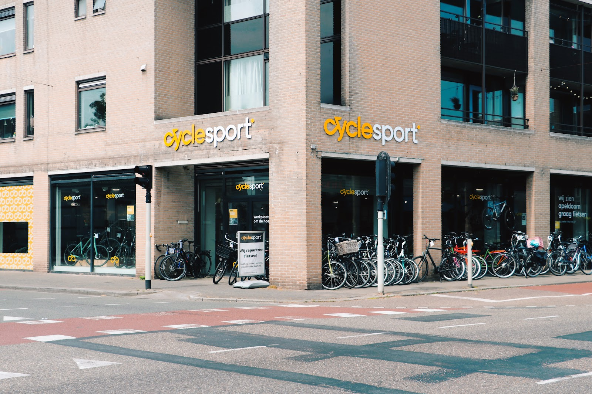
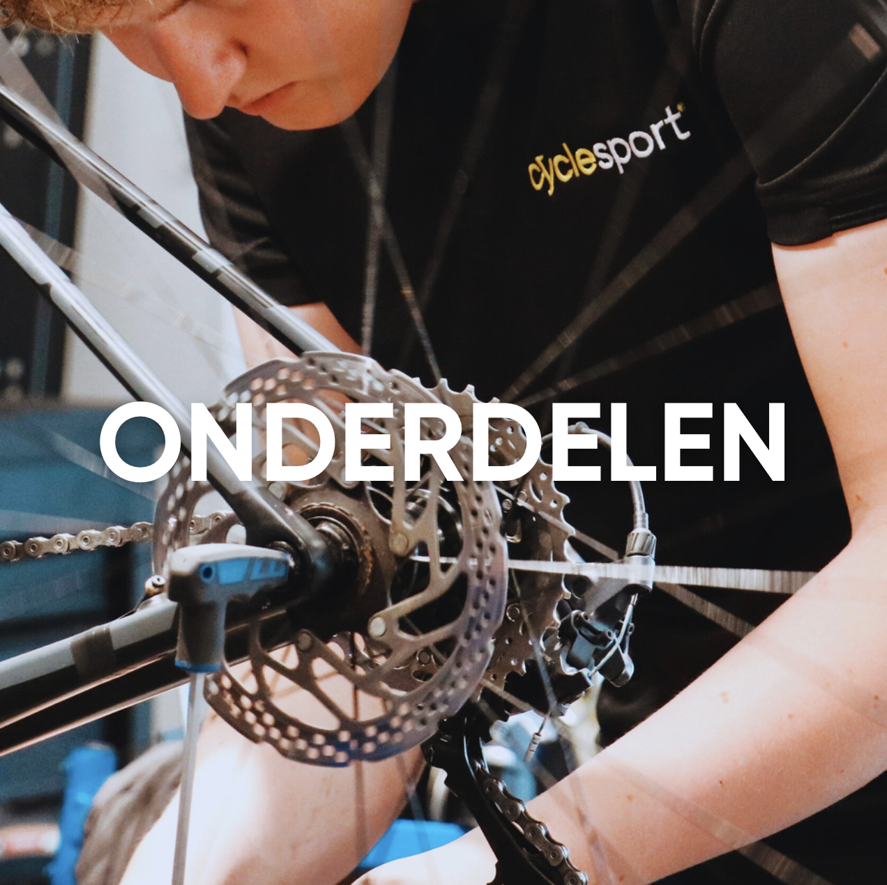
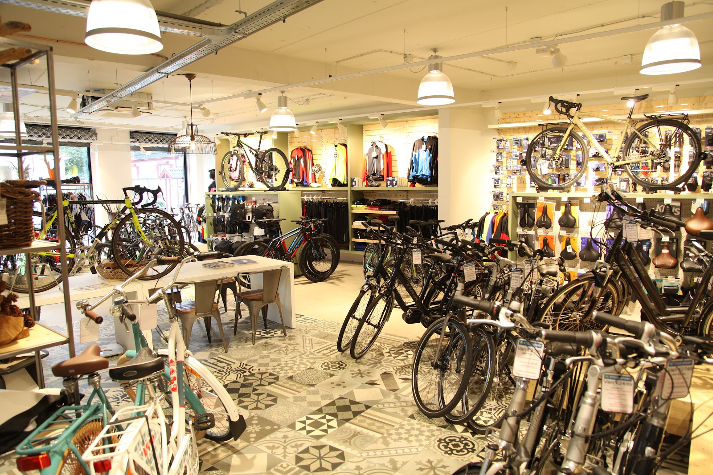
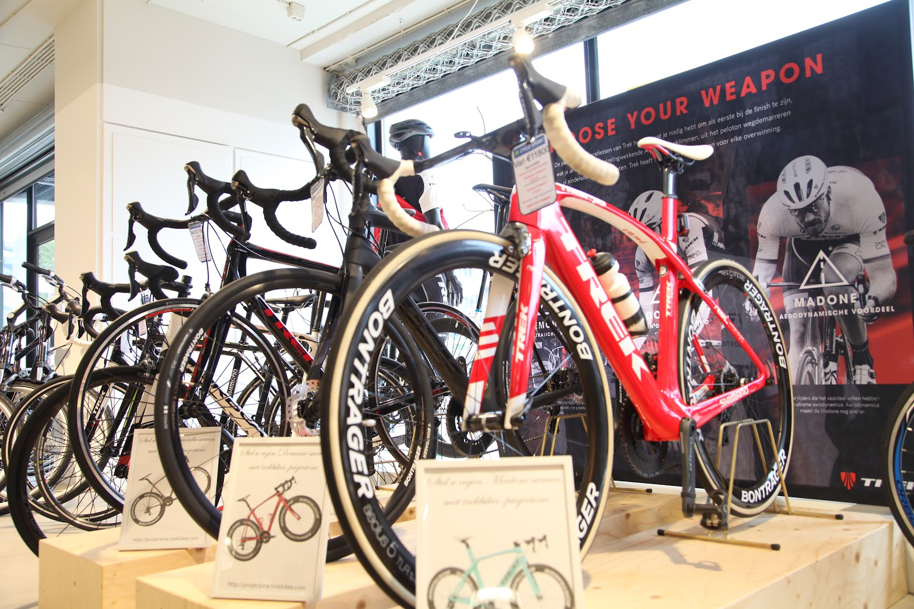
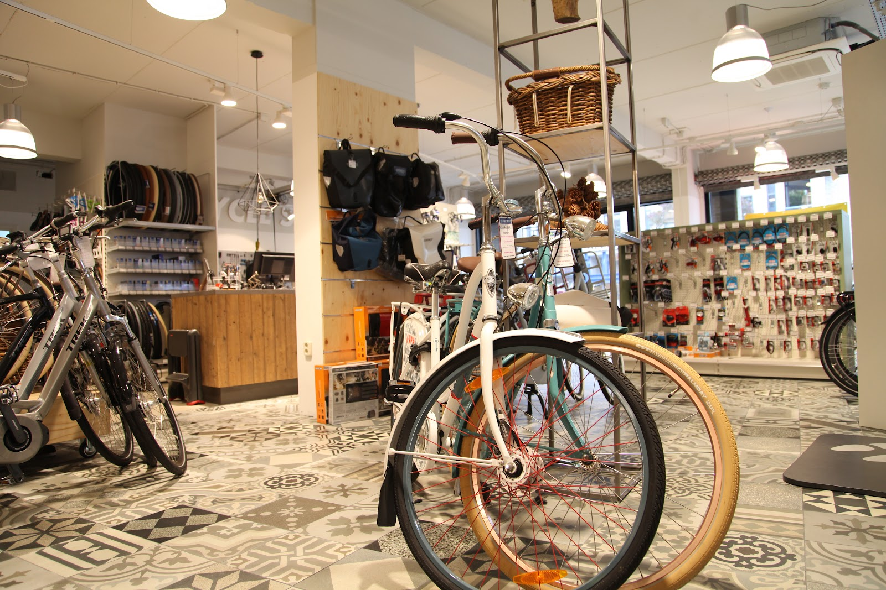
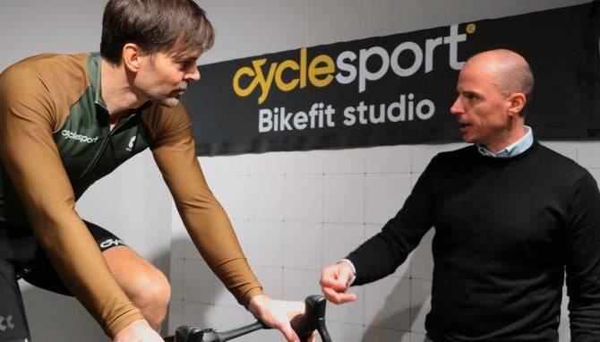
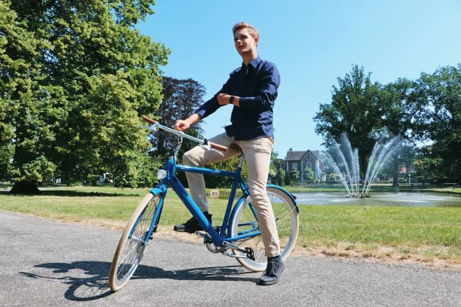
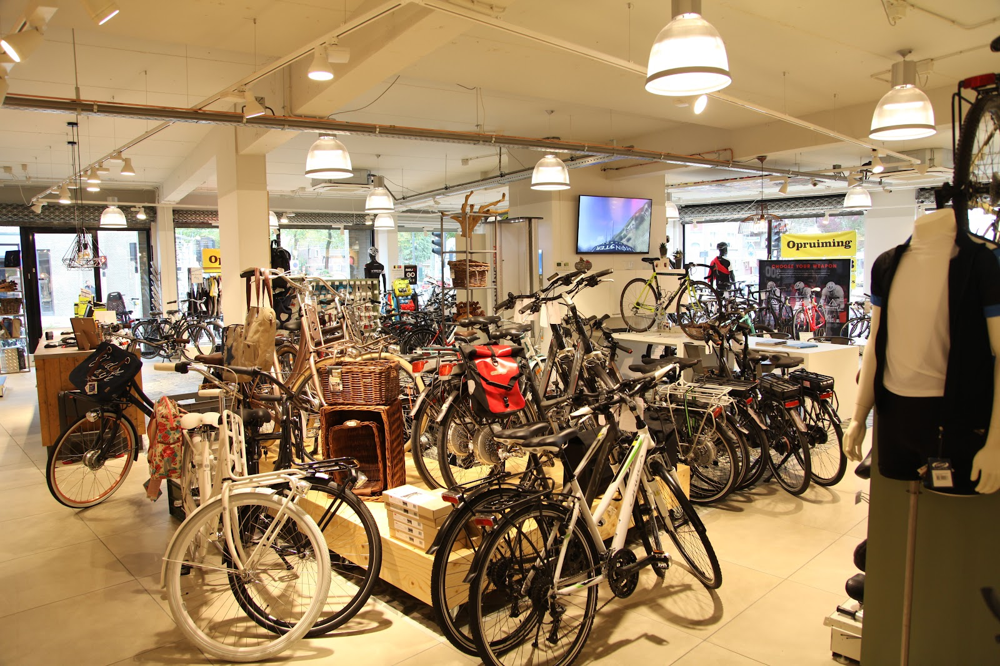

Fietsenwinkel en werkplaats aan de Asselsestraat
Voor een nieuwe stadsfiets, e-bike of racefiets, en voor de reparatie van de fiets die u al heeft. Technische specialisten in de winkel, een eigen werkplaats achter de toonbank.

De werkplaats
Cyclesport heeft een eigen servicedienst voor al uw fietsreparaties. Van een lekke band tot een wiel, een zadel dat niet goed zit of een complete onderhoudsbeurt.
Uw fiets hoeft niet bij ons gekocht te zijn. We bekijken eerst wat er nodig is en zeggen het ook als iets nog niet hoeft.
Afspraak maken: 055 579 0135
"Niet alleen de reparatie is goed uitgevoerd maar vooraf bespraken we wat er evt gedaan moest worden aan de fiets en hierbij gaf hij aan dat niet alles perse gedaan hoefde te worden. Goed meegedacht met de (portemonnee van de) klant."
Kom langs voor een testrit
De winkel staat vol. Kom vrijblijvend langs, bekijk de fietsen in het echt en maak een proefrit. Informeer naar de laagste prijs: inruil van uw oude fiets is mogelijk.
- Stadsfietsendagelijks gebruik
- E-bikesmet trapondersteuning
- Racefietsenvoor op de weg
- Gravelweg en onverhard
- Mountainbikesvoor het bos
- Bak- en transportfietsen
Dealer van Trek, Scott, Orbea, Merida, Velo de Ville, Tenways, UTO/EOvolt, BiXbi, BSP en Reany.




Bikefit studio
Rijdt u veel kilometers op de racefiets, gravel of mountainbike? In de bikefit studio stellen we uw fiets af op uw lichaam en uw manier van rijden. Bel of loop binnen om een afspraak te maken.

Lease en verhuur
Een fiets leasen via uw werkgever, of een fiets huren voor een dag of een week. Vraag in de winkel naar de mogelijkheden.
4,5
sterren op Google
gemiddeld, uit 197 reviews
"Heel tevreden over deze fietsenmaker! Ze hebben de fiets voor mijn dochtertje netjes in elkaar gezet. Ondanks dat de fiets ergens anders besteld was, hebben ze zonder problemen geholpen. Iets waar niet iedere fietsenmaker voor openstaat.
Vriendelijke service en een eerlijke prijs. Zeker een aanrader!"
"Ik was binnen gelopen om mijn zadel te laten verstellen. Deze bleek verkeerd op de zadelpen te zitten. ( Was door ander bedrijf gedaan) Ze zijn een half uur bezig geweest om het zadel goed te krijgen en af te stellen, ik hoefde niks te betalen. Geweldige service dus voor een fiets die niet bij hun gekocht is."
Asselsestraat 98
CyclesportAsselsestraat 98
7311 TJ Apeldoorn
- Telefoon
- 055 579 0135
- service@cyclesport.nl
Openingstijden
| Maandag | 08:30 tot 17:30 |
| Dinsdag | 08:30 tot 17:30 |
| Woensdag | 08:30 tot 17:30 |
| Donderdag | 08:30 tot 17:30 |
| Vrijdag | 08:30 tot 17:30 |
| Zaterdag | 09:00 tot 16:00 |
| Zondag | Gesloten |
